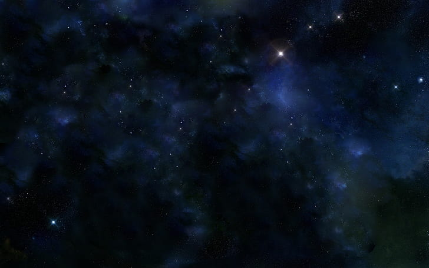
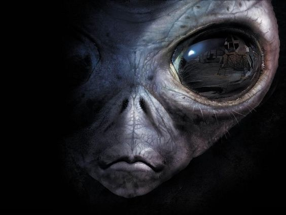
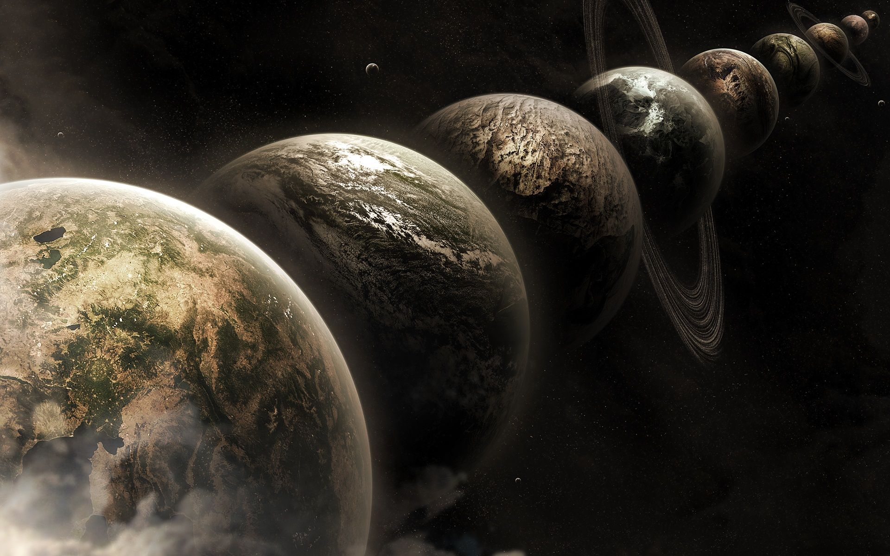
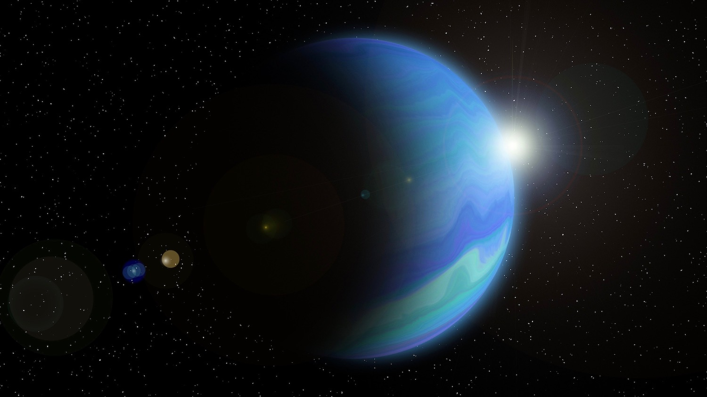
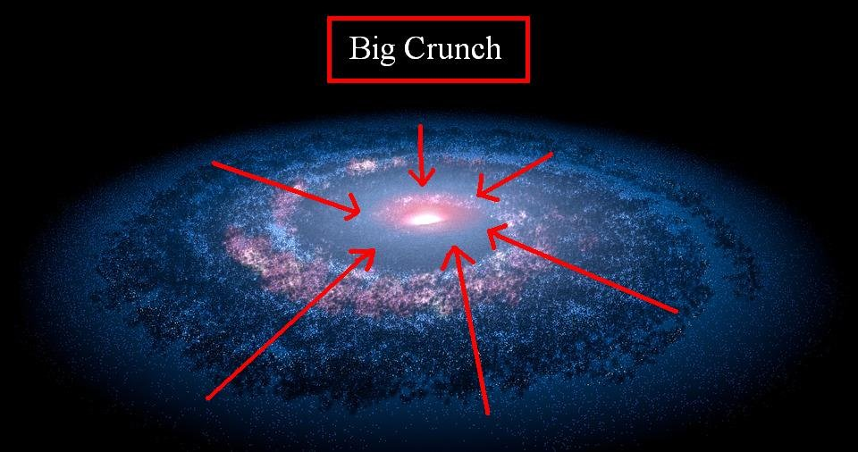

Space mysteries
Dark Matter
Planets, stars, asteroids, galaxies – the things that we can actually see – make up less than 5% of the total universe. Scientists think another ~25% is a strange substance called dark matter: we can’t see it, we don’t understand it, but we’re pretty sure it’s out there because everything moves to its gravitational tune. Scientists believe that dark matter acts like a spider’s web, holding fast-moving galaxies together. And there’s so much of this stuff that it bends the appearance of space, so that when astronomers observe distant galaxies, they often appear distorted. We have plenty of evidence that dark matter exists, but as for what it is, that remains a mystery. Some think dark matter is composed of an undiscovered particle or particles, others believe it’s an undiscovered property of gravity. Whatever the truth, dark matter is a real puzzle, and it’s proved hugely tricky to pin down. 
The Fermi paradox
The Fermi Paradox seeks to answer the question of where the aliens are.
Given that our star and Earth are part of a young planetary system compared to the rest of the universe —
and that interstellar travel might be fairly easy to achieve — the theory says that Earth should have been
visited by aliens already.
As the story goes, Italian physicist Enrico Fermi, most famous for creating the first nuclear reactor, came up with
the theory with a casual lunchtime remark in 1950. The implications, however, have had extraterrestrial researchers
scratching their heads in the decades since.

"Fermi realized that any civilization with a modest amount of rocket technology and an immodest
amount of imperial incentive could rapidly colonize the entire galaxy," the Search For Extraterrestrial Intelligence (SETI)
Institute in Mountain View, California, said on its website. "Within ten million years, every star system could be brought under
the wing of empire. Ten million years may sound long, but in fact it's quite short compared with the age of the galaxy, which is roughly
ten thousand million years. Colonization of the Milky Way should be a quick exercise."
Fermi reportedly made the initial remark, but he died in 1954. Publication fell to other people, such as Michael Hart, who wrote an article titled
"An Explanation for the Absence of Extraterrestrials on Earth" in the Royal Astronomical Society (RAS) Quarterly Journal in 1975. (Some say this is
the first such paper to explore the Fermi paradox, although this claim is a bit hard to prove.)
"We observe that no intelligent beings from outer space are now present on Earth," Hart wrote in the abstract. "It is suggested that this fact can best be
explained by the hypothesis that there are no other advanced civilizations in our galaxy." He noted, however, that more research in biochemistry, planetary
formation and atmospheres was needed to better narrow down the answer.
While Hart was more of the opinion that we were the only advanced civilization in the galaxy (he argued that in Earth's history, somebody could have visited us
already unless they started their journey less than two million years ago), he outlined four arguments exploring the paradox:
1) Aliens never came because of a physical difficulty "that makes space travel infeasible,"
which could be related to astronomy, biology or engineering.
2) Aliens chose never to come to Earth.
3) Advanced civilizations arose too recently for aliens to reach us.
4) Aliens have visited Earth in the past, but we have not observed them.
The Multiverse
Is our universe unique? From science fiction to science fact, there is a concept that suggests that there could be other
universes besides our own, where all the choices you made in this life played out in alternate realities. The concept is known as a "parallel universe," and
is a facet of the astronomical theory of the multiverse.
The idea is pervasive in comic books, video games, television and movies. Franchises ranging from "Buffy the Vampire Slayer" to "Star Trek" to "Doctor Who"
to "Digemon" use the idea to extend plotlines. (A fuller list of parallel universes in fiction is at the bottom of the article.)
There actually is quite a bit of evidence out there for a multiverse. First, it is useful to understand how our universe is believed to have come to be.
Around 13.7 billion years ago, simply speaking, everything we know of in the cosmos was an infinitesimal singularity. Then, according to the Big Bang theory,
some unknown trigger caused it to expand and inflate in three-dimensional space. As the immense energy of this initial expansion cooled, light began to shine through.
Eventually, the small particles began to form into the larger pieces of matter we know today, such as galaxies, stars and planets.

One big question with this theory is: are we the only universe out there? With our current technology, we are limited to observations within this universe because the universe
is curved and we are inside the fishbowl, unable to see the outside of it (if there is an outside.)
Planet 9
Pluto is technically not a planet. But that doesn't mean our solar system is limited to eight planets. Scientists believe that there may be a ninth, undiscovered planet on the
fringes of our corner of space. If you pay attention to orbital trajectories of out-there celestial bodies, like Uranus and Neptune, you'll notice peculiarities.
The reason is likely that there's a massive gravitational body out there—like a planet—pulling things out of whack. According to Konstantin Batygin, assistant professor of planetary science at the California
Institute of Technology, the reason we may not have found "Planet 9" yet is "because it is staggeringly dim…With the best telescopes around, we could just barely detect it, we think." And for more brain-twisting science
stories, This Is What Life Could Look Like 200 Years from Now.
The 11-Jupiter-mass exoplanet called HD106906 b occupies an unlikely orbit around a double star 336 light-years away and it may be offering clues to something that might be much closer to home: a hypothesized distant member
of our Solar System dubbed “Planet Nine.
Planet Nine is a hypothetical planet in the outer region of the Solar System. Its gravitational effects could explain the unusual clustering of orbits for a group of extreme trans-Neptunian objects (ETNOs), bodies beyond Neptune
that orbit the Sun at distances averaging more than 250 times that of the Earth.

The Big Crunch
One possibility for the future of the universe is the Big Crunch Theory. If you’re familiar with the Big Bang, you know the universe was once a tiny dot of matter. Then, that
tiny dot grew quickly. It became everything that exists today. And the universe is still expanding, carrying galaxies farther and farther away from each other. The Big Crunch Theory says that, one day, the
universe will stop growing. Then, it will begin to shrink.
As the universe grows smaller, it will also get hotter. One way to think of this is as the opposite of the Big Bang. Instead of expanding and cooling, the universe will shrink and heat up. Finally, everything
that exists in the universe will collapse into a tiny point, right where it began.
s the Big Crunch inevitable? Definitely not. In fact, many experts today doubt it will happen. That’s because, in order for the Big Crunch to occur, the universe’s growth has to slow down. But the exact opposite is
happening. Instead of slowing down, the expansion of the universe is speeding up.
How is that possible? Experts point to dark energy. They still don’t completely understand how dark energy works. But it makes up about 70 percent of the energy in the universe. And it’s pushing the universe to grow faster.
As dark energy speeds up the universe’s expansion, galaxies move farther away from each other. That makes the Big Crunch less likely.
Without the Big Crunch, many other possibilities exist. One is the Big Freeze. This theory says the universe will continue to expand and cool. Eventually, it will lose all heat. Instead of winding up a tiny point of very hot
matter, it ends as a large amount of cooled matter.
